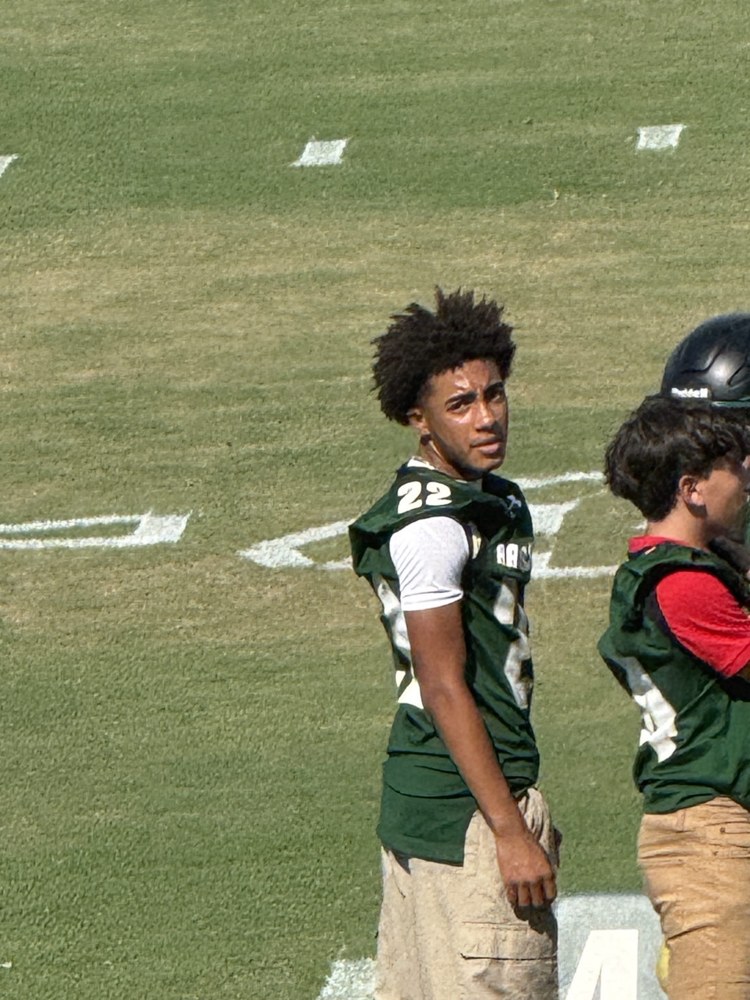
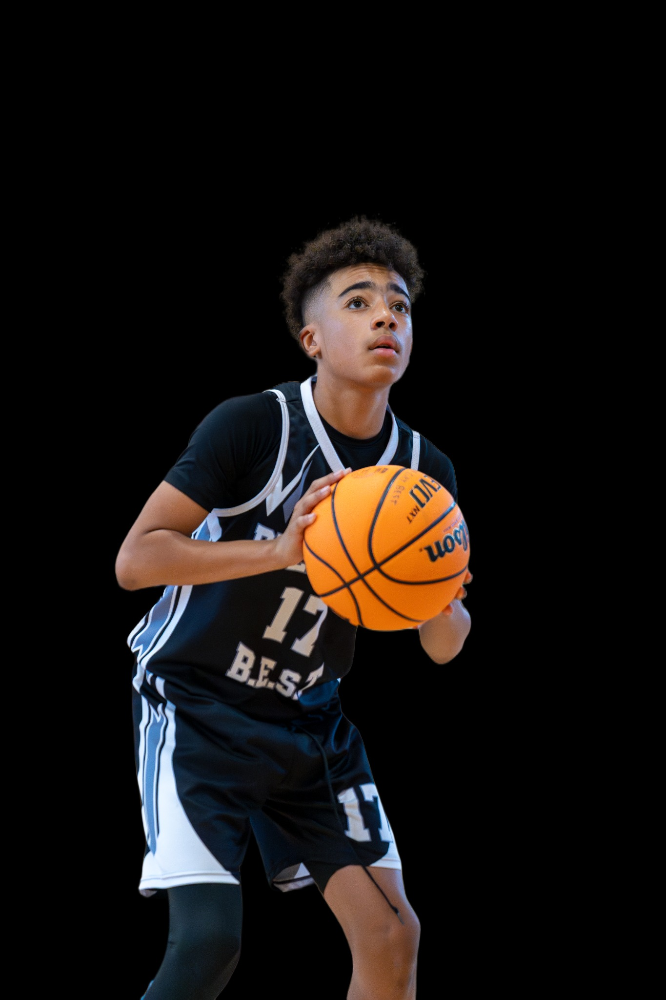
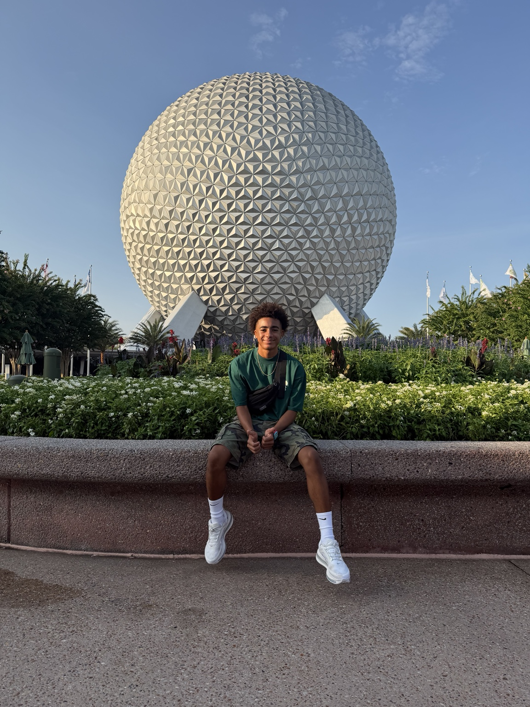

SJ #22
CLASS2030
SCHOOLRavenscroft
FOOTBALLWR / DB • #22
BASKETBALLGuard • #22
LACROSSEMidfield • #22
THREE SPORTS.
ONE FOCUS.

22ABOUT SJ
STUDENT. ATHLETE. LEADER.
Shon Johnson II is a Class of 2030 student-athlete at Ravenscroft School competing in football, basketball, and lacrosse.
On the football field he lines up at wide receiver and defensive back. The goal of this site is simple: keep the story, the work, the games, and the highlights all in one place as the journey grows.
CLASS2030
SCHOOLRavenscroft
FOOTBALLWR / DB
NUMBER#22
FEATURED
LATEST HIGHLIGHTS
2026 JV FOOTBALL
SCHEDULE & RESULTS
1–0
LAST GAME
South Wake Lions
Aug 20 • 4:30 PM • Field 1
W 23–14
NEXT GAME
North Raleigh Christian Academy
Aug 27 • 5:00 PM • Field 1
HOME
Date
Opponent
Time
Location
Status
AUG 202026
South Wake Lions
4:30 PM
Home • Field 1
W 23–14
AUG 272026
North Raleigh Christian Academy
5:00 PM
Home • Field 1
HOME
SEP 32026
Wayne Christian
5:00 PM
Home • Field 1
HOME
SEP 172026
Harrells Christian Academy
5:00 PM
Home • Field 1
HOME
SEP 242026
North Raleigh Christian Academy
5:00 PM
Away • @North Raleigh Christian
AWAY
OCT 12026
Grace Christian of Raleigh
5:00 PM
Home • Field 1
HOME
OCT 82026
Wayne Christian
5:00 PM
Away • @Wayne Christian
AWAY
OCT 152026
Harrells Christian Academy
5:30 PM
Away • @Harrells Academy
AWAY
THE JOURNEY
SUMMER 2026
The games are part of the story. So are the places, the people, and the work that happens between them.
JULY 2026 • FRANCE
SUMMER IN FRANCE
This summer I had the chance to travel to France and experience Paris for the first time. Seeing the Eiffel Tower, Notre-Dame, the Louvre and Versailles in person was completely different from seeing them in pictures.
It was a chance to experience another country, learn some history and spend time with my family before getting back home and preparing for my freshman year.

SUMMER 2026 • WALT DISNEY WORLD
DISNEY SUMMER
Disney was another highlight of the summer. It was nice having some time to relax, have fun and enjoy the trip before football workouts and school started taking over the schedule.
One of my favorite parts was getting a picture in front of Spaceship Earth at EPCOT. Definitely a summer memory I wanted to keep.
SUMMER 2026 • BASKETBALL TRAINING
SUMMER WORK
Even with football season coming up, I stayed in the gym this summer working on my basketball game with Coach Matt. We focused on ball handling, shooting, footwork, finishing, conditioning and getting stronger.
Coach Matt has pushed me beyond just basketball. He challenges me physically and mentally, especially when I’m tired and want to slow down. He’s taught me to keep working, stay focused and get comfortable being uncomfortable.
A lot of what we worked on this summer wasn’t just about becoming a better basketball player. It was about becoming a stronger athlete and a tougher competitor.
Appreciate Coach Matt for continuing to push me and hold me accountable.
THE WORK CONTINUES. 🏀💪